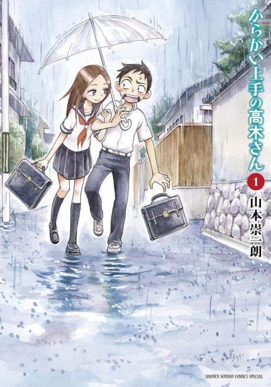

Teasing Master Takagi-san
からかい上手の高木さん
After the anime, read the manga from Chapter 1.
7.4AniList score
—Animeter, no votes yet
36episodes, 3 seasons
Anime finished. Where does the manga pick up?
Start at Chapter1
The anime reorders, skips and adds chapters, so there is no clean stopping point; start from chapter 1 of the now-finished manga.